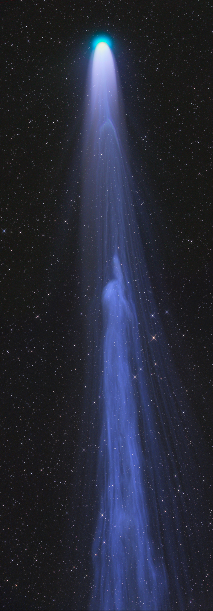

Disconnection Event
Comet Leonard, seen here as a portion of its plasma tail disconnects and is carried away by the solar wind (photo by Gerald Rhemann, 25/12/2021).

Timeline of the Human Condition, 13.8 billion years ago